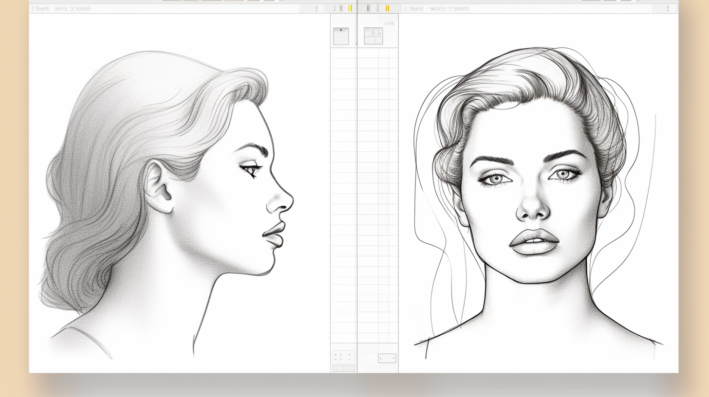

Digitalage Help Center
Welcome to the Digitalage Help Center - your resource for platform guides, troubleshooting, tips for creators, and answers from real people 24/7.
Get Started On Digitalage
If you're new to Digitalage, check out our getting started materials:
* How to Create a Profile
* Best Practices for Content Creation
* Introduction to Monetization Tools
* An Overview of Privacy Settings
Account Management
Find help managing your Digitalage profile and connected services:
* How to Edit Profile and Account Details
* Connecting Third-Party Apps and Services
* Billing and Payments FAQs
* Subscription Cancellation Steps
Creator Support Hub
Level up your creator skills with our playbooks and best practices:
* Complete Guide to Audience Growth
* Maximizing Your Revenue Streams
* Collaborating with Other Creators
* Protecting and Promoting Your IP
Still Can't Find What You Need?
Get answers from our friendly support team 24/7. Start a live chat or submit a request below and we’ll be in touch shortly!
[Contact Form Here]
Fields:
Name:
* Required field
* Single line text
* Validation error if left blank: "Please enter your name"
Email:
* Required field
* Email validation requiring @ sign and domain
* Validation error if invalid email: "Please enter a valid email address"
Phone Number (optional):
* Single line text
* Validation for 10-digit number format
Company/Affiliation (optional):
* Single line text
Subject/Category Dropdown:
* Required Field
* Options like "General Inquiry", "Partnerships", "Investments", "Press Inquiry", etc.
* Validation error if blank: "Please select a subject for your inquiry"
Message:
* Required field
* Multi-line text box
* Validation error if blank: "Please enter your message details"
Layout:
Top section with Name, Email, Phone Number and Dropdown fields
Message multi-line text box underneath fields
Submit button at bottom to trigger form action
Required field indicators on relevant fields
Validation Error Handling:
Inline validation errors displayed next to each field as needed
Summary error banner on top if entire form has issues on submit attempt
Field focus set on first problematic field during validation checks
Friendly focus styles used for corrected fields
Thank you for contacting Digitalage!
We have received your inquiry and will get back to you within 48 hours with a response.
In the meantime, feel free to explore more about Digitalage and our mission to transform social media technology for good. Consider joining our community to stay updated on the latest platform developments as well.
We appreciate you getting in touch and look forward to following up soon!
We look forward to helping you thrive on Digitalage!
